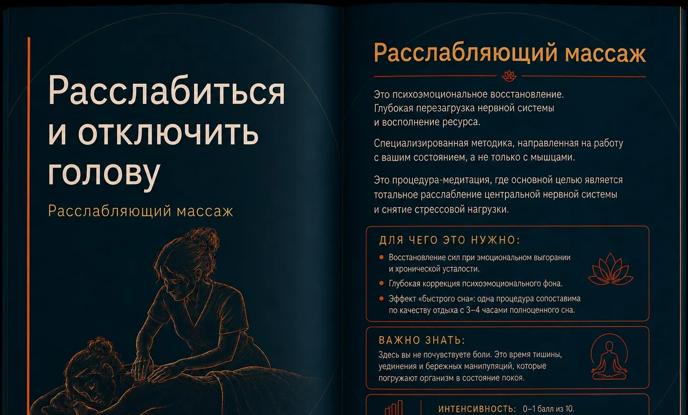

Расслабляющий массаж во Владивостоке
Расслабиться и отключить голову
Мягкая процедура для восстановления ресурса, тишины и разгрузки нервной системы.

О процедуре
Расслабляющий массаж
Мягкая процедура, направленная на глубокое расслабление и восстановление ресурса. Здесь основной акцент — не на интенсивной проработке, а на тишине, ритме и ощущении безопасности.
Специалист работает медленно и бережно, помогая снизить ощущение перегрузки и переключиться из напряжения в состояние покоя.
Как проходит
Плавные манипуляции выполняются в спокойном темпе. Давление остаётся мягким, а последовательность движений помогает телу постепенно расслабиться.
Для чего выбирают
- Восстановление после эмоциональной и физической перегрузки
- Снижение ощущения внутреннего напряжения
- Помощь в переключении внимания и качественном отдыхе
Важно знать
Процедура не должна быть болезненной. Сообщайте специалисту о любых неприятных ощущениях — давление и темп можно изменить.
Когда процедуру лучше перенести или согласовать с врачом
- Острая инфекция и повышенная температура
- Повреждения кожи в зоне воздействия
- Любое ухудшение самочувствия, при котором массаж не рекомендован врачом
Визуальная памятка
Кратко о процедуре
Откройте изображение в полном размере, чтобы рассмотреть материал.

Сравнить
Возможно, вам подойдёт другой формат


{kind=link}
Подходит ли вам эта услуга?
Можно выбрать процедуру самостоятельно или написать администратору — поможем сравнить форматы.